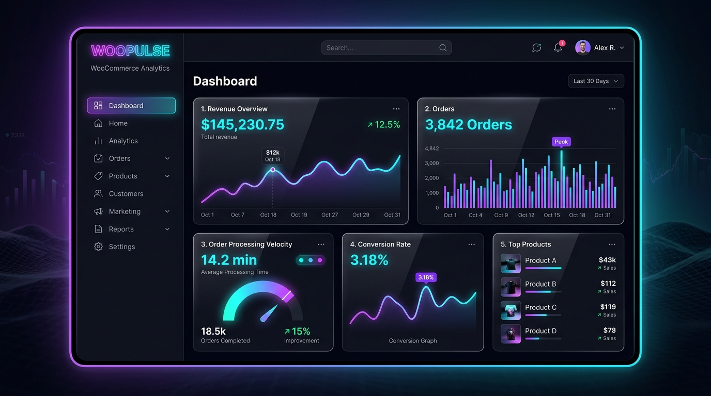

2024 • SaaS Commerce Labs
WooPulse Engine — Real-Time WooCommerce Analytics
High-performance analytics & live order routing dashboard built natively for WooCommerce stores.
WordPress Core
PHP 8.2
WooCommerce REST API
Vue.js